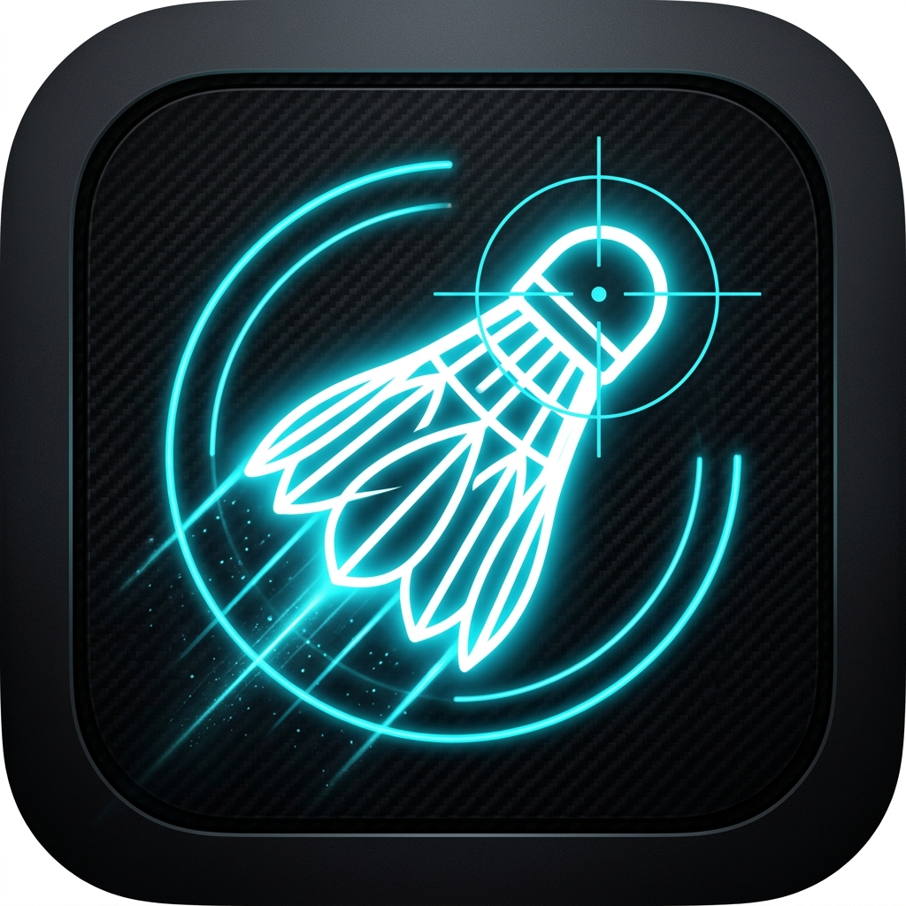
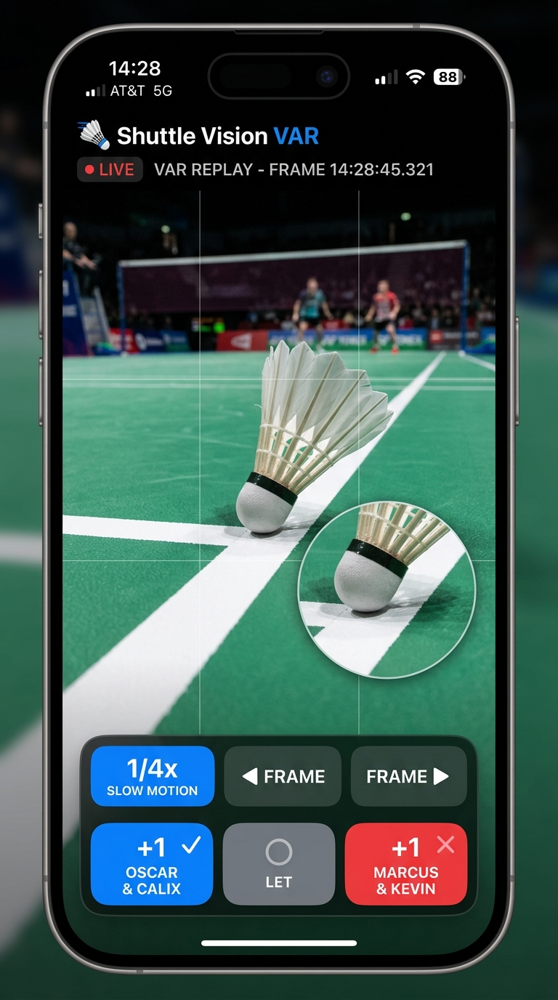
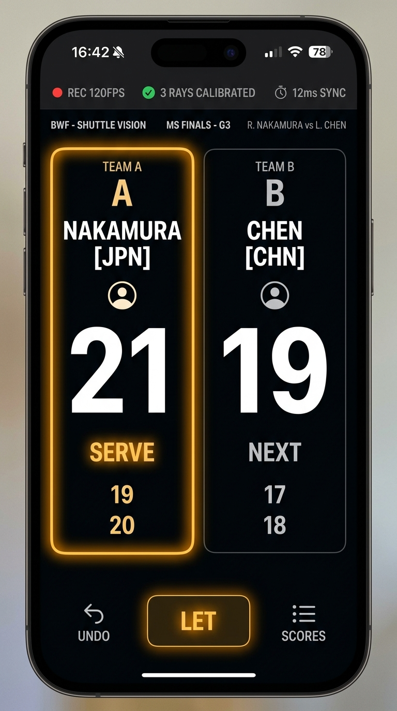
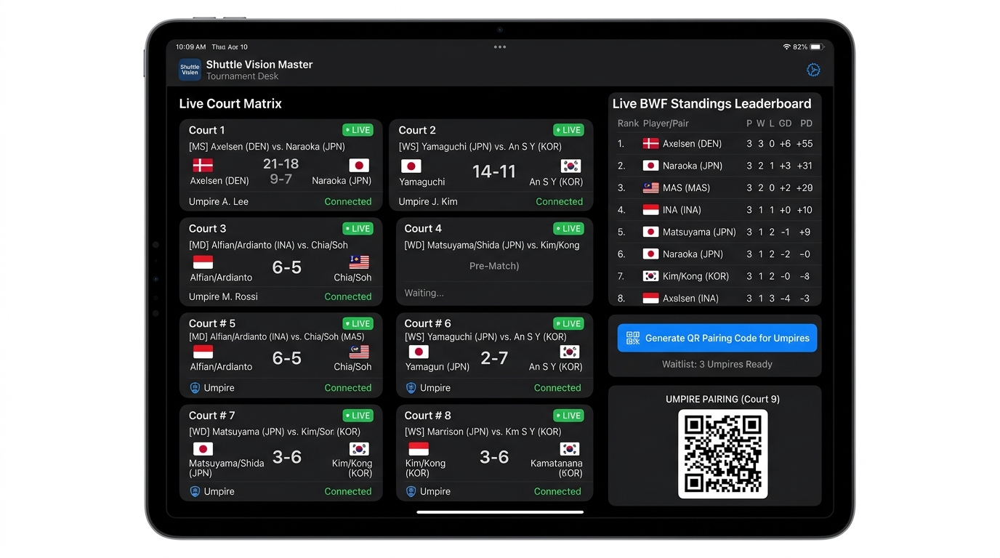
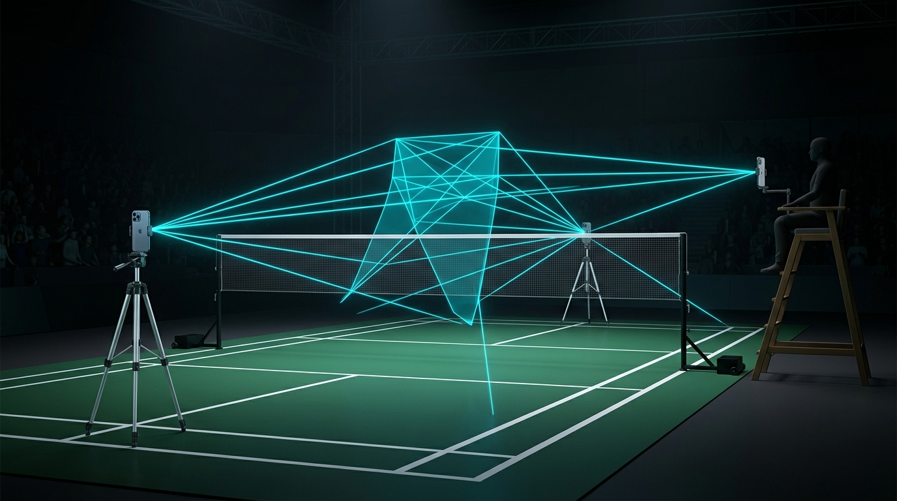

Shuttle Vision
Turn the iPhones and iPads you already own into a synchronized multi-angle court replay system, an intelligent solo umpire VAR co-pilot, and an 8-court tournament desk. Settle contested calls in seconds with ¼× slow-motion loops, frame-by-frame scrubbing, and 1-tap adjudication — 100% offline with zero subscriptions.
What Shuttle Vision Does (Honest Transparency)
Shuttle Vision provides high-frame-rate synchronized multi-angle replays, sub-millisecond clock sync, instant ¼× slow-motion loops, official BWF rally rule enforcement, and offline multi-court tournament management. It does not pretend to make black-box automated line calls without human review; it gives players and umpires crystal-clear video evidence to make accurate calls themselves.
Solo Umpire VAR Co-Pilot & Official BWF Scoreboard
Whether you mount a single phone on a tripod at the net post or pair three devices for multi-angle Hawkeye 3D spatial ray tracking, Shuttle Vision eliminates scoring mistakes and ends contested line calls instantly.

Solo Umpire VAR Decision Co-Pilot
Tapping Review instantly opens the last rally from the rolling dashcam buffer without waiting for file exports. Plays back in a continuous ¼× slow-motion loop with dedicated ◀ Frame and ▶ Frame stepping controls.

Official BWF Smart Scoreboard
High-contrast 120pt+ score tiles with serve-glowing borders. Automatically tracks server, receiver, and diagonal service boxes (even/odd) across Singles and Doubles. Prompts for 11-point intervals and end changes, with official BWF Law 14 LET support.
Master Tournament Desk & 8-Court Matrix
Run entire club nights, school championships, and regional opens from a single master iPad. Umpires scan a QR code to connect their iPhones and stream live scores back to the central desk without a Wi-Fi router.

Master Tournament Desk & Live BWF Leaderboard
Monitors up to 8 live courts simultaneously. Calculates standings in real time based on official BWF tie-break rules (Matches Won > Head-to-Head > Game Difference > Point Difference). Organizers hold master overrule authority, fixture generation (Round Robin, Single Elimination, Open Queue), and CSV export capabilities.

Scalable Multi-Camera Mesh (1 to 4 Devices)
Solo Mode (1 Phone): Works on a single tripod at the net or umpire chair as a standalone digital scoreboard, video buffer, and VAR station.
Duo Mode (2 Phones): Two phones mount at opposing net posts facing each half of the court with sub-millisecond clock sync and dual-angle replay.
Pro Mode (3 Phones): Two net post cameras plus a lateral umpire chair camera seeing both court halves simultaneously, unlocking 3D spatial ray intersection.
How to Get Started on Court
Set up in under 60 seconds with zero network configuration.
Solo & Casual Match
1. Mount your iPhone on a tripod near the net post (~1.5m high) tilted slightly downward.
2. Tap Casual Match, select Singles or Doubles, and enter player names.
3. Tap or swipe up (+1) to score. Tap Review at any moment to settle a contested line call with slow-mo frame stepping.
Multi-Phone Court Rig
1. Host taps Multi-Camera Match and presents the court pairing QR code.
2. Partner taps Join Match and scans the host's screen with their iPhone camera.
3. Place Phone 1 at the near net post and Phone 2 at the far post. Both cameras synchronize clocks automatically over direct P2P.
Master Tournament Desk
1. Open Shuttle Vision on an iPad and tap Create Tournament.
2. Paste your team roster and generate Round Robin groups or Knockout brackets.
3. Tap Show Umpire QR Code. Umpires scan the code, select their court (Court 1–8), and begin live scorekeeping.
Recommended Equipment & Court Setup
Shuttle Vision uses standard off-the-shelf tripods and devices you already own.
| Component | Recommended Specification | Operational Details |
|---|---|---|
| Tripod Mounts | 1.5m – 1.8m Lightweight Aluminum Tripods | Position at net posts or umpire chair, tilted 15° downward toward the court baseline for optimal line visibility. |
| Lighting | Standard Indoor Sports Hall Lighting | Shuttle Vision locks the electronic shutter at 60 FPS or 120 FPS high-speed capture to eliminate cork motion blur. |
| Supported Devices | iPhone XS / iPad 8th Gen or newer (iOS 17+) | Optimized for Apple Neural Engine, AVFoundation high-speed frame capture, and Hardware Video Toolboxes. |
| Networking | Zero Equipment (No Router or Internet Needed) | Uses direct Apple Multipeer Connectivity (Bluetooth + Local Wi-Fi Direct) for 100% offline zero-latency mesh. |
Frequently Asked Questions
Clear, honest answers about privacy, pricing, and court operations.
Ready to upgrade your badminton court?
Download Shuttle Vision on the App Store. Experience instant slow-motion VAR replays and run official BWF tournaments from your iPhone and iPad.
Download on the App Store